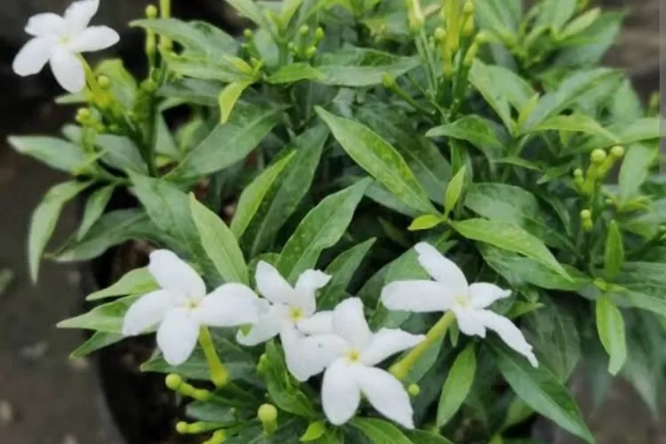

Di Desa Sritejo Kencono, berdiri megah Tugu Padi, sebuah simbol sarat makna yang menggambarkan kemakmuran dan keberuntungan, yang tercermin dari padi sebagai mata pencaharian utama penduduk. Tugu ini, berbentuk setangkai padi yang menjulang tinggi, tidak hanya merupakan sebuah karya seni, tetapi juga cerminan dari nilai-nilai budaya dan kehidupan masyarakat setempat.
Warna emas yang menghiasi Tugu Padi melambangkan kekayaan, kemakmuran, dan masa keemasan desa, serta harapan akan kesejahteraan yang berkelanjutan. Hijau, yang mewakili kesuburan tanah, menggambarkan harapan dan kedamaian. Hitam menandakan kekokohan dan ketegaran masyarakat dalam menghadapi tantangan, sementara merah melambangkan semangat dan keberanian petani. Putih menggambarkan kesucian hati dan persatuan warga, dan biru, yang mencolok, melambangkan sumber air vital bagi pertanian desa.
Selain Tugu Padi, motif Hayat atau Pohon Kehidupan, yang dikenal di Lampung, juga memiliki makna filosofis mendalam, menandakan kekuatan abadi dan kehidupan itu sendiri. Begitu pula dengan Motif Pucuk Rebung, yang melambangkan sopan santun dan hubungan antara dunia atas dan bawah, merefleksikan identitas dan warisan budaya masyarakat Lampung.
Desa ini, dengan nama yang berasal dari bahasa Sanskerta dan Jawa, menunjukkan kemakmuran (Sri), kecemerlangan (Tejo), dan kemewahan (Kencono). Transformasi bentuk sungai di taman desa simbolisasi dari aliran sungai yang menjadi sumber pengairan utama. Bentukan pulau di taman mewakili dusun-dusun Desa Sritejo Kencono, terpisahkan oleh sungai dan danau, menggambarkan batas-batas geografis yang unik.
Taman dan tugu ini, dengan filosofi dan warna yang kaya, tidak hanya menggambarkan keindahan fisik, tetapi juga cerita dan nilai yang dipegang teguh oleh masyarakat Desa Sritejo Kencono.
| NO | GAMBAR TANAMAN | PENJELASAN |
|---|---|---|
| 1 |  | Rombusa (Tabernaemontana corymbosa) adalah spesies bunga dari keluarga apocynaceae yang ditemukan di Brunei, China, Indonesia, Laos, Malaysia, Myanmar, Singapura, Thailand, dan Vietnam |
| 2 | Sansevieria adalah genus tanaman berbunga yang dikenal secara historis, asli Afrika, terutama Madagaskar, dan Asia selatan, sekarang termasuk dalam genus Dracaena berdasarkan studi filogenetik molekuler. Nama umum untuk 70 atau lebih spesies yang sebelumnya ditempatkan dalam genus termasuk lidah mertua. | |
| 3 | Ophiopogon atau Rumput kucai adalah genus tumbuhan yang berasal dari daerah beriklim hangat hingga Asia Timur, Tenggara, dan Selatan tropis. Meskipun berbentuk seperti rumput, tetapi mereka tidak berkerabat dekat dengan rumput sejati (famili Poaceae). Penamaannya berasal dari kata dalam bahasa Yunani yakni ophis (ὄφις, "ular") dan pogon (πώγων, "jenggot") yang kemungkinan merujuk pada daun dan pertumbuhan berumbainya | |
| 4 |  |
Axonopus compressus adalah sebuah spesies rumput. Rumput ini sering digunakan sebagai padang rumput tetap, untuk menutupi tanah. Rumput ini tumbuh terlalu rendah untuk dipotong sebagai bahan makanan ternak. Kadang rumput ini digunakan untuk lapangan sepakbola, terutama untuk kompetisi tingkat rendah tanpa tuntutan kualitas dan perawatan yang tinggi. |